Introduction - DIESEL FUEL INJECTION
- Path
- Descriptions > 10 ENGINE > 1060 DIESEL FUEL INJECTION > Introduction - DIESEL FUEL INJECTION
- Kind
- system description
- Applies to
- engines: 1.3 JTD; all production periods
- Interactive page
- https://sloeber94.github.io/elrnDB-lYpsln/en/#/2429840
Applies to: engines: 1.3 JTD; all production periods
OPERATION
The Magnet Marelli MJD 6JF Common Rail is a high pressure electronic injection system for fast direct injection diesel engines.
The main features are:
- availability of high injection pressures (1400 bar);
- possibility of modulating these pressures between 150 bar and a maximum operating pressure of 1400 bar, irrespective of the engine rotation speed and load;
- capacity of operating at high engine speeds (up to 5000 rpm in full load conditions);
- precision injection (advance and duration of injection);
- reduction in consumption;
- reduction in emissions.
The main functions of the system are basically as follows:
- control of fuel temperature;
- control of engine coolant temperature;
- control of quantity of fuel injected;
- control of the idle speed;
- fuel cut-off during overrunning;
- control of cylinder balance during idling;
- control of irregular operation;
- control of exhaust fumes during acceleration;
- control of exhaust gas recirculation (E.G.R.);
- control of maximum torque limiting;
- control of maximum speed limiting;
- control of heater plugs;
- control of entry into operation of climate control system (where fitted);
- control of auxiliary fuel pump;
- control of cylinder position for timing;
- control of main and multiple injection advance;
- control of closed loop injection pressure;
- control of electrical balance;
- IMA injector calibration.
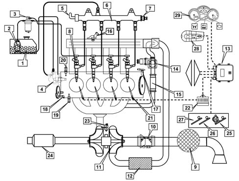
1. Fuel tank 2, Auxiliary fuel pump 3. Fuel filter 4. High pressure pump 5. High pressure regulator 6. Joint injector manifold 7. High pressure sensor 8. Injectors 9. Air filter 10. Flow meter 11. Air compressor 12. Heat exchanger (air/air) 13. Injection control unit 14. E.G.R. solenoid valve 15. EGR heat exchanger 16. Manifold pressure sensor 17. Rpm sensor 18. Timing sensor 19. Water temperature sensor 20. Minimum engine oil pressure sensor 21. Heater plugs 22. Heater plugs control unit 23. Waste gate 24. Catalyzer 25. Double-track accelerator pedal potentiometer 26. Dual brake pedal switch 27. Clutch pedal switch 28. Cruise control (where fitted) 29. Instrument panel
Applies to: engines: 1.3 JTD; all production periods
Introduction
The Common Rail systems makes it possible to carry out two pilot injections before T.D.C. with the advantage of distributing the pressure in the combustion chamber more evenly, reducing the combustion noise, typical of direct injection engines and up to two injections after the main injection with the advantage of reducing emissions.
The control unit controls the quantity of fuel injected, regulating the line pressure and injection times.
The control unit processes the following information to control the quantity of fuel to inject:
- engine rpm;
- coolant temperature;
- supercharging pressure;
- air temperature (from flow meter);
- intake air quantity;
- battery voltage;
- diesel pressure;
- accelerator pedal position;
- diesel temperature.
Diagram of input/output info to/from control unit
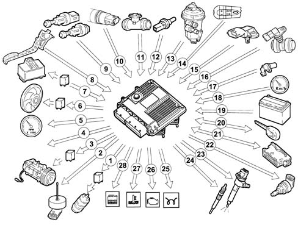
1, Auxiliary electric fuel pump 2, Water in diesel sensor 3, Air conditioning compressor (where present) 4, E.G.R. system solenoid valve 5, Rev counter 6, Electric fans 7, Heater plugs control unit 8, Double-track accelerator pedal potentiometer 9, Double brake pedal - clutch pedal switch 10, Fuel pressure sensor 11, Flow meter 12, Engine coolant temperature sensor 13, Fuel temperature sensor 14, Cruise control (where fitted) 15, Excess pressure signal 16, Timing sensor 17, RPM sensor 18, Speedometer 19, Battery 20, Fiat CODE (body computer) 21, Tester connection 22, Pressure regulator 23, Injectors 24, Glow plugs 25, Heater plugs warning light 26, Injection warning light 27, Water overheating warning light 28, Water in fuel warning light
Applies to: engines: 1.3 JTD; all production periods
Self-diagnosis
The control unit's self-test checks the signals coming from the sensors, comparing them with the permitted limits:
INDICATION OF STARTING FAULTS:
- warning light on until engine has started indicates test stage;
- warning light off after engine has started indicates no fault in components which affect the system's safety;
- warning light on when engine is running indicates fault.
FAULT INDICATION DURING OPERATION:
- warning light on indicates fault;
- warning light off indicates no fault to components which affect the system's safety.
RECOVERY
From time to time, the control unit defines the type of recovery according to the components which are faulty.
The recovery parameters are managed by those components which are not faulty.
Applies to: engines: 1.3 JTD; all production periods
Recognition of Fiat CODE
When the control unit receives the ignition 'ON' signal, it dialogues with the Body Computer via the CODE function to obtain starting enablement.
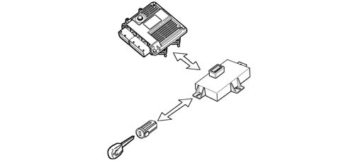
Applies to: engines: 1.3 JTD; all production periods
Control of the fuel temperature
With the fuel temperature at 80°C , measured by the sensor in the diesel filter, the control unit operates the pressure regulator in order to reduce the line pressure and if this is not sufficient, it also reduces the quantity of fuel injected.
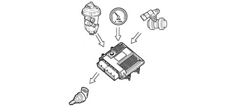
Applies to: engines: 1.3 JTD; all production periods
Control of the engine coolant temperature
With the temperature of the engine coolant greater than 105°C, the control unit:
- reduces the quantity of fuel injected (reduces the engine power);
- operates the cooling fans;
- lights up the coolant overheating warning light.
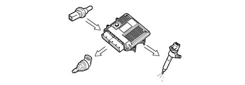
Applies to: engines: 1.3 JTD; all production periods
Control of the quantity of fuel injected
On the basis of the signals coming from the sensors and the values in the map, the control unit:
- it operates the pressure regulator;
- varies the 'pilot' injection time throughout the entire rev range;
- varies the 'main' injection time.
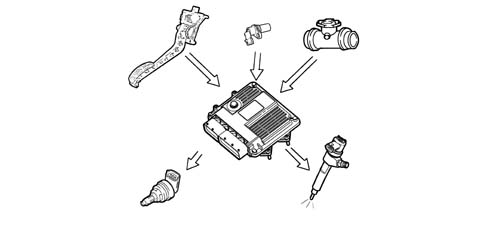
Applies to: engines: 1.3 JTD; all production periods
Control of the idle speed
The control unit processes the signals coming from the various sensors and regulates the quantity of fuel injected:
- it operates the pressure regulator;
- it varies the injector injection time.
Within certain limits the speed takes the battery voltage into account.
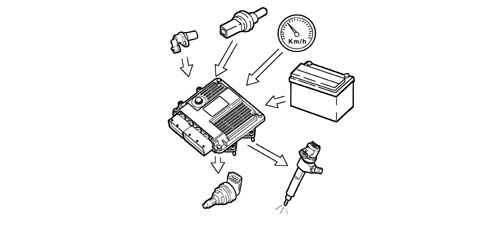
Applies to: engines: 1.3 JTD; all production periods
Fuel cut-off during overrunning
When the accelerator pedal is released the following logics are implemented:
- it sets the injection time to zero;
- it partially varies the injection time of the fuel injectors before idle speed is reached;
- it operates the fuel pressure regulator.
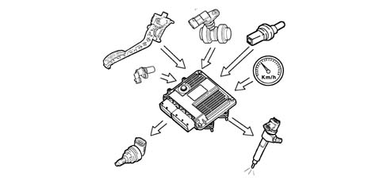
Applies to: engines: 1.3 JTD; all production periods
Control of cylinder balance during idling.
On the basis of the signals received from the sensors, the control unit controls the precision of the torque at idle speed:
- it varies the quantity of fuel injected in the individual injectors (injection time).
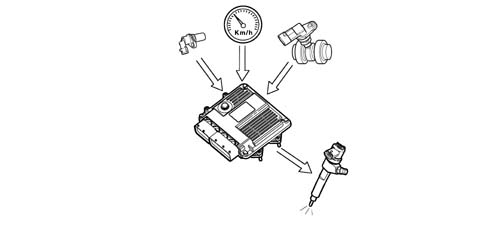
Applies to: engines: 1.3 JTD; all production periods
Control of irregular operation
The control unit processes the signals received from the various sensors and corrects the quantity of fuel to be injected in order to improve driveability, reducing jerks during driving through the injector opening time.
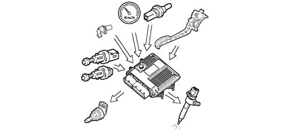
Applies to: engines: 1.3 JTD; all production periods
Control of the exhaust fumes during acceleration
In order to limit smoke during fast transitions, the control unit, on the basis of the signals received from the accelerator pedal potentiometer, flow meter and engine rpm, limits the quantity of fuel to be injected via:
- the pressure regulator
- the injection time of the fuel injectors.
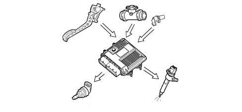
Applies to: engines: 1.3 JTD; all production periods
Control of the exhaust gas recirculation (E.G.R.)
In accordance with EURO 3/4 anti-pollution regulations, the control unit, on the basis of the engine load and signal coming from the accelerator pedal potentiometer, limits the quantity of fresh air drawn in, implementing the partial intake of exhaust gases, via:
- regulating the opening of the electric E.G.R. valve.
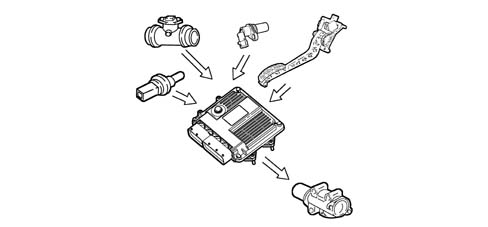
Applies to: engines: 1.3 JTD; all production periods
Control of the maximum torque restriction
According to the number of revs, the control unit calculates the following from predefined maps:
- the torque limit;
- the permissible fumes (limit).
It compares these minimum values and corrects them with other parameters:
- coolant temperature;
- engine rpm;
- vehicle speed;
- air temperature,
and controls the quantity of fuel to be injected (pressure regulator - injectors).
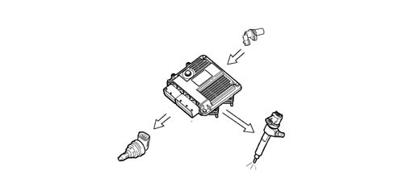
Applies to: engines: 1.3 JTD; all production periods
Control of the maximum speed limit
When the engine reaches 5200 rpm, the control unit interrupts the operation of the injectors and consequently the supply pressure is reduced.
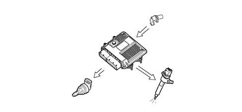
Applies to: engines: 1.3 JTD; all production periods
Control of the heater plugs
The control unit, during the following stages:
- starting;
- post-starting;
- times the operation of the plug preheater control unit according to the engine temperature.
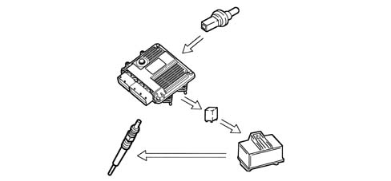
Applies to: engines: 1.3 JTD; all production periods
Control of entry into operation of the air conditioning system
The control unit operates the air conditioning compressor:
- switching it on/off when the relevant switch is pressed;
- switching it off momentarily (for a few seconds) if there is substantial acceleration or a request for maximum power.
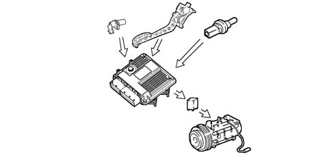
Applies to: engines: 1.3 JTD; all production periods
Control of the auxiliary electric fuel pump
Irrespective of the engine speed, the control unit:
- supplies the auxiliary fuel pump with the ignition key in the ON position;
- excludes the auxiliary pump supply if the engine is not started up within a few seconds.
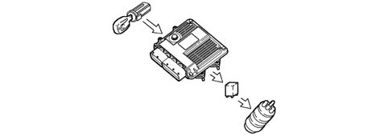
Applies to: engines: 1.3 JTD; all production periods
Control of the position of the cylinders
During each revolution of the engine, the control unit recognizes which cylinder is in the explosion stroke and operates the injection sequence at the appropriate cylinder.
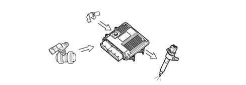
Applies to: engines: 1.3 JTD; all production periods
Control of the main injection and pilot injection advance
On the basis of the signals coming from the various sensors, including the absolute pressure sensor in the actual control unit, the control unit determines the optimum injection point according to an internal map, not only in relation to driving comfort, but also in accordance with EURO 3/4 emission limits.
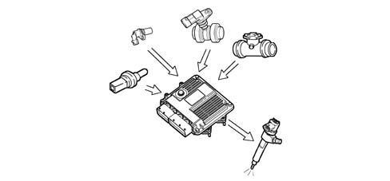
Applies to: engines: 1.3 JTD; all production periods
Control of closed loop injection pressure
On the basis of the engine load, determined by processing the signals coming from the various sensors, the control unit operates the regulator to obtain optimum line pressure.
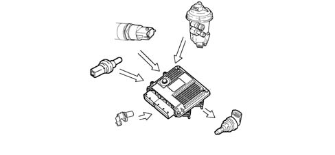
Applies to: engines: 1.3 JTD; all production periods
Control of the electrical balance
According to the battery voltage, the control unit varies the idle speed:
- it increases the injector injection time;
- it regulates the line pressure.
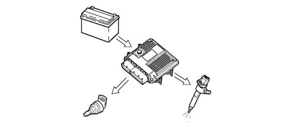
Applies to: engines: 1.3 JTD; all production periods
Control of the electric fans
The control unit, in accordance with the coolant temperature and pressure of the refrigerant in the air conditioning system, controls:
- the switching on of the fans at the first or second speed.
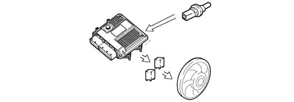
Applies to: engines: 1.3 JTD; all production periods
Control of Cruise Control system (where fitted)
According to the position of the cruise control lever, the control unit directly controls the quantity of fuel injected to control and maintain the vehicle speed memorized.
A warning light in the dashboard, activated by the control unit, indicates whether the system is operating or not.
The cruise control is momentarily disabled:
- by operating the brake,
- by operating the clutch;
- the resume button restores the speed memorized.
The cruise control is not disabled if there is an acceleration request (e.g. overtaking) and the vehicle automatically returns to the speed set as soon as the accelerator is released.
The ASR function (anti-spin) has priority over the cruise control for safety reasons.
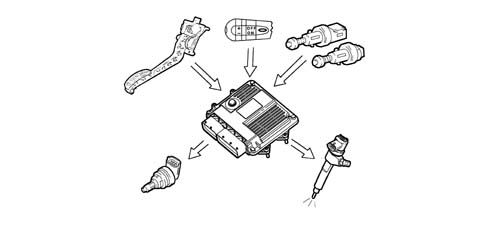